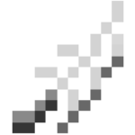
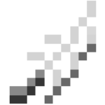
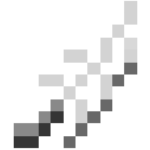

Description

Duelists | Fera
The Duelists are a faction of weapon-worshippers; a people of relentless ambition and conquest. Their dogmatic and miltaristic culture begets hostility towards other races, all forms of magic, and any shred of disobedience - a culture that pits them against enemies on all sides.


Raiders | Freeport
The Raiders of Freeport share two traits: their aptitute for magic and hatred for the Duelists. Their alliance is an unsteady one, but putting up a united front is the only way to survive.


Assassins | Levi
As the Levians grew resentful of their second-class status to the Ferrans, they looked to Freeport for inspiration. The Assassins do not love magic, but understand it is necessary to win the freedom they so desperately desire.


Guardians | Kosmos
Despite the Duelists' seething hatred of magic, they are unable to breach the Guardians' last stronghold: Kosmos. Inside the forbidden city, the Guardians tirelessly prepare for their final battle, knowing the wars around them only feed a greater evil.


Witherknights | Umber
The Witherknights once ruled the depths of the Nether, the skies of the Aether, and every land inbetween. After their empire crumbled in a disastrous violet blaze, they were slowly lost to history. But now, ancient magics stir, and the Witherknights have awakened once more.


Paladins | Aether
Arda breathed life into the world and handpicked the Paladins to lead it. But the greatest Paladins grew discontent with eternal servitude. They slaughtered their own brethren, overthrew Arda, and named themselves Witherknights. Now, Arda's spirit lives on, building power, gaining followers, and hatching her ultimate revenge.